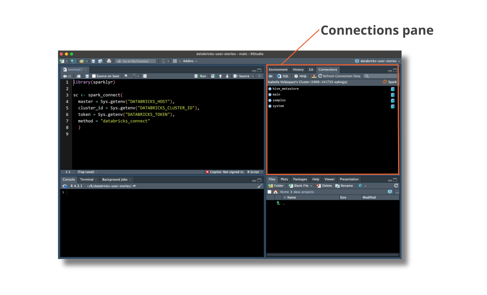
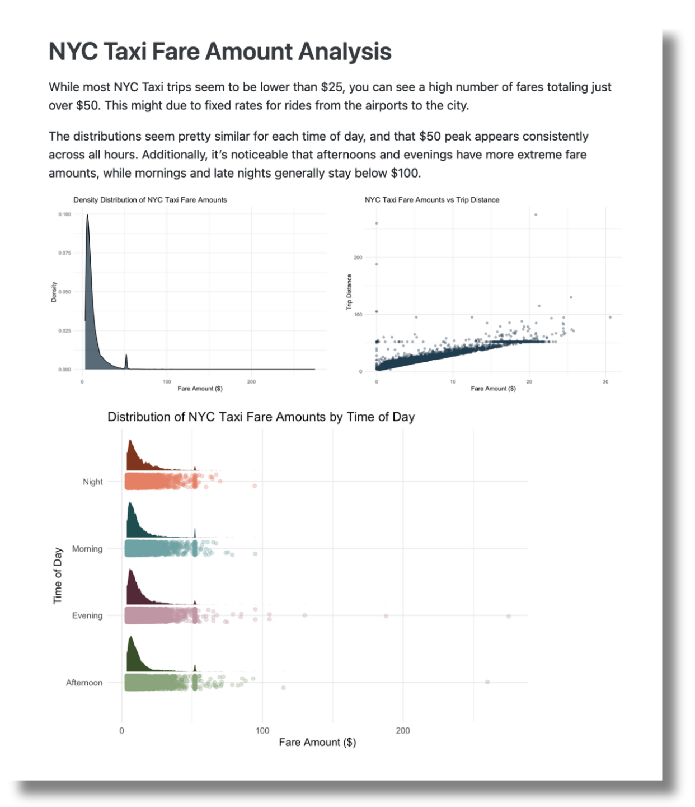

2023-11-08
We are thrilled to announce that the latest version of sparklyr is on CRAN. sparklyr is the popular and powerful R interface for Apache Spark, including Spark clusters hosted in Databricks.
Sparklyr version 1.8.3 introduces a completely new backend hosted in the companion pysparklyr package. This new backend enables R users to make remote connections to Spark and Databricks. Thanks to the new Spark Connect protocol, R users will no longer need to run their code on a node in the Spark cluster; instead, you can access Spark’s powerful distributed computing features from RStudio Desktop, a Posit Workbench instance, or any running R terminal or process.
Install the latest versions of both packages by running:
install.packages("sparklyr")
install.packages("pysparklyr")Please note that there are additional configuration steps required to set up the correct PySpark environment. Find detailed instructions for working with remote clusters in the sparklyr documentation.
The pysparklyr extension makes it easier to browse and access data stored in a Databricks workspace’s Unity Catalog using RStudio’s Connection Pane. The Connection Pane follows the same structure as the Databricks Data Explorer, so it is intuitive for users accustomed to both Databricks and RStudio.

After connecting to a table in Databricks, you can use dplyr for data analysis. Use familiar R functions to run analysis and create reports with ease. For example, here is a script running summarise() on the trips dataset from our Databricks cluster:
library(dplyr)
library(dbplyr)
trips <- tbl(sc, in_catalog("samples", "nyctaxi", "trips"))
trips |>
group_by(pickup_zip) |>
summarise(
count = n(),
avg_distance = mean(trip_distance, na.rm = TRUE)
)Once your R session is connected to Databricks, you can easily run analyses and create impressive Quarto reports to distribute among stakeholders.
In a previous blog post, we walked through a data analysis and reporting workflow using NYC taxi trip record data. Check it out to discover how to connect to Databricks from RStudio, extract and query data, and then share your valuable insights on a platform like Posit Connect.

The CRAN versions of sparklyr and pysparklyr are available now. To get started making new remote connections to Spark or Databricks, explore the sparklyr documentation and dive in! We would love to hear your feedback on our community site.